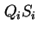
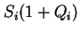
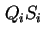
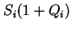

Next: ตัวอย่าง
Up: การวิเคราะห์ค่าเฉลี่ย (Mean Value Analysis)
Previous: กล่าวนำ
Contents
Index
ระบบเครือข่ายคิวแบบเปิด ใช้ในการจำลองระบบประมวลรายการบริการ (Transaction Processing) เช่น การสำรองที่นั่ง และระบบธนาคาร ในระบบลักษณะดังกล่าวอัตราการเข้าใช้ระบบ ไม่ขึ้นอยู่กับภาระงานของระบบในขณะนั้น งานเข้ามาใช้ระบบตามกระบวนการพัวซองด้วยค่าเฉลี่ยการเข้าใช้บริการ  ในบทนี้ เราจะศึกษาวิธีการวิเคราะห์ระบบลักษณะดังกล่าว โดยสมมุติว่า ระบบที่พิจารณาประกอบด้วย Fixed Capacity Service Center หรือ Delay Center
สำหรับ Fixed Capacity Service Centers ในระบบเครือข่ายคิวแบบเปิด, ค่าเวลาตอบสนองมีค่าเท่ากับ
ในบทนี้ เราจะศึกษาวิธีการวิเคราะห์ระบบลักษณะดังกล่าว โดยสมมุติว่า ระบบที่พิจารณาประกอบด้วย Fixed Capacity Service Center หรือ Delay Center
สำหรับ Fixed Capacity Service Centers ในระบบเครือข่ายคิวแบบเปิด, ค่าเวลาตอบสนองมีค่าเท่ากับ
เมื่องานเข้าใช้ระบบที่อุปกรณ์  , งานที่เข้ามาจะพบกับงานอื่นจำนวน
, งานที่เข้ามาจะพบกับงานอื่นจำนวน  งานรออยู่ก่อนหน้า (รวมงานที่กำลังรับบริการอยู่ด้วย) จากนั้นงานที่เพิ่งมาถึงต้องรอเป็นเวลา  วินาที เมื่อรวมกับเวลารับบริการของตัวเอง ค่าเวลาตอบสนองรวมจะเท่ากับ  สมการ 8.1 ไม่ใช้กฎการปฏิบัติงาน เนื่องจากไม่สามารถวัดได้โดยตรงจากระบบ
จากสมมุติฐานความสมดุลการไหลของงาน (Job Flow Balance Assumption) ค่าอัตราความสำเร็จของระบบเท่ากับอัตราการเข้าใช้ระบบนั้นคือ
งานรออยู่ก่อนหน้า (รวมงานที่กำลังรับบริการอยู่ด้วย) จากนั้นงานที่เพิ่งมาถึงต้องรอเป็นเวลา  วินาที เมื่อรวมกับเวลารับบริการของตัวเอง ค่าเวลาตอบสนองรวมจะเท่ากับ  สมการ 8.1 ไม่ใช้กฎการปฏิบัติงาน เนื่องจากไม่สามารถวัดได้โดยตรงจากระบบ
จากสมมุติฐานความสมดุลการไหลของงาน (Job Flow Balance Assumption) ค่าอัตราความสำเร็จของระบบเท่ากับอัตราการเข้าใช้ระบบนั้นคือ
ค่าอัตราความสำเร็จของอุปกรณ์ โดยใช้กฎการไหลต่อเนื่องของงาน (Forced Flow Law) เราจะได้
 |
(8.3) |
ค่าภาระงานของอุปกรณ์ หาได้จากกฎภาระงาน (Utilization Law) เท่ากับ
ความยาวคิวของอุปกรณ์ เราสามารถหาได้จากกฎของ Little
หรือ
แทนความยาวคิว ลงในสมการ 8.1 ค่าเวลาตอบสนองจะเท่ากับ
สำหรับ Delay Center มีจำนวนเครื่องบริการเป็นอนันต์ ทำให้ค่าเวลาตอบสนอง และความยามคิวของ Delay Center เท่ากับ
Next: ตัวอย่าง
Up: การวิเคราะห์ค่าเฉลี่ย (Mean Value Analysis)
Previous: กล่าวนำ
Contents
Index
Vara Varavithya
2002-03-09